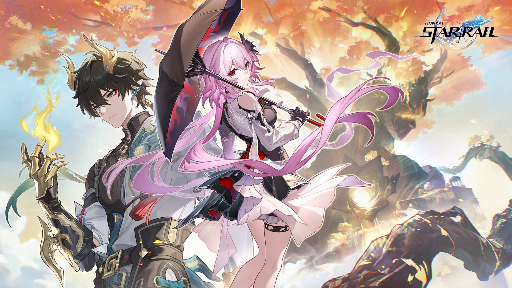

Обновление версии 3.6 «Темень вернулась на пустоши»
Уж кончается ночь, и заря недалёко. Чужеземцы путь свой беспрестанно продолжают, и сойдутся вновь они на краю света, где всей земле светит взошедшая утренняя звезда.
24.09.2025
Обновление версии 3.5 «Пока живы герои»
Приглашаем вас посмотреть специальный стрим Развлечений межзвёздного мира «Ближе к звёздам» - «Дань Хэн: Освободитель Пустошей: Зова дракона земли не будет!»
13.08.2025
Обновление версии 3.4 «Ибо солнце погаснет»
Я расскажу о нимфах, что гнались за солнцем. Пеан воскресающей земли... Они прошли через врата и достигли трона, они видели цветы средь упокойных юдолей и пали на пороге рассвета.
02.07.2025
Обновление версии 3.3 «Падение на пороге рассвета»
На грани краха или же на пути к вершинам... Земли, куда не смели ступить даже боги, однажды будут отмечены вехами смертных.
27.05.2025